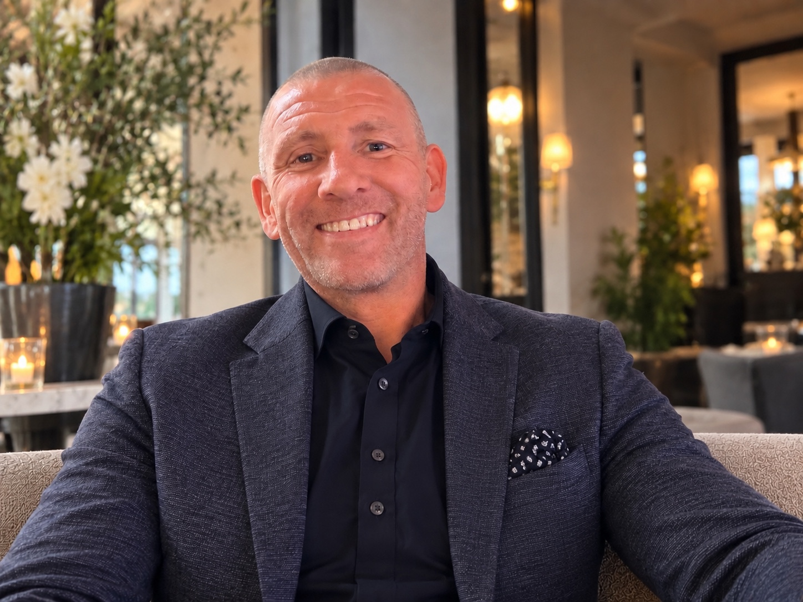

Talk to the person who will look after you.
Stuart Hudson is the Founder and Owner of Angel Telecom and leads the business as Managing Director. He focuses on business mobiles, repairs and refurbished handsets, with customers able to deal directly with him rather than being passed around a call centre.

An owner-led business, built around relationships.
Angel Telecom has been supplying the needs of businesses across Yorkshire and the North for more than 30 years. We are a Bradford based business and therefore understand the importance of getting value for money.
The business is built around direct relationships, practical advice and finding a solution that fits your business, rather than forcing everyone into the same model.
Connect. Protect. Repair. Reuse.
- Straightforward business mobile advice
- New and refurbished device options
- Four Pocket Geek Tech Repair centres
- Repair support for business and insurance requirements
- Trade-in and responsible recycling options
- Ongoing support as your business evolves
Trusted for 30+ years
Long-term relationships built on trust.
Value for money
Practical solutions that work for your business.
Based in Bradford
Supporting businesses across Yorkshire and the North.
A complete business partner
Mobiles, devices, repairs and lifecycle support.